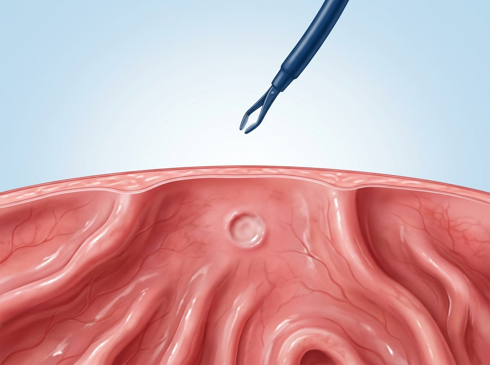

식사와 활동 — 1주일 동안
식사와 활동 — 1주일 동안

| 언제 | 이렇게 하세요 | 이건 피하세요 |
|---|---|---|
| 검사 당일 | 수면에서 깬 뒤 1~2시간 지나 미음·죽부터. 보호자와 함께 귀가합니다. | 검사 후 24시간 운전·기계 조작·중요한 결정 |
| 1~2일 | 연두부·흰살생선·삶은 채소 같은 부드러운 음식 | 격한 운동·사우나·찜질방·무거운 물건 들기 |
| 3~7일 | 조금씩 평소 식사로 돌아갑니다. | 1주일 동안 술·맵고 자극적인 음식·튀김·날음식 |
 약 먹는 법 — 의사 지시가 먼저입니다
약 먹는 법 — 의사 지시가 먼저입니다
| 이렇게 드세요 | |
|---|---|
|
|
 결과와 헬리코박터 제균 치료
결과와 헬리코박터 제균 치료
| 조직검사 결과 | 위염·궤양·헬리코박터·종양 여부를 현미경으로 확인합니다. 1~2주 뒤 알려 드리며, 연락을 못 받으셨으면 꼭 전화로 확인하세요. |
|---|---|
| CLO 검사 (헬리코박터 신속검사) | 당일~며칠 안에 결과가 나옵니다. 양성이면 헬리코박터 파일로리균에 감염되어 있다는 뜻입니다. |
| 위산 억제제와 항생제 2~3가지를 처방받은 기간(삼제요법 14일·동시요법 10일) 동안 빠짐없이 드세요. 페니실린 알레르기는 미리 알려 주세요. 메트로니다졸이 들어 있으면 복용 중과 끝난 뒤 3일(72시간)은 술을 마시지 마세요. 약을 다 드시고 4주 이상 지난 뒤 숨을 불어 하는 검사(요소호기검사)로 균이 없어졌는지 확인합니다. 정확한 결과를 위해 검사 전 2주는 프로톤펌프억제제·P-CAB(이름이 ‘-프라졸’·‘-프라잔’으로 끝나는 위산 억제제)을 쉬며, 멈추거나 바꿀 약은 담당 의사와 정합니다. | |
| 조직검사 결과에 따라 보통 1~2년 뒤이며, 의사가 알려 드립니다. |
피를 토하거나 커피 찌꺼기 같은 것을 토할 때 · 짜장면처럼 검고 끈적한 변이나 피가 섞인 변(떼어 낸 자리의 출혈 신호) · 가슴이나 배가 심하게 아프고 점점 심해질 때 · 어지러워 쓰러질 것 같거나 식은땀이 날 때 · 38℃ 이상 열·오한 · 숨이 차거나 삼키기 어려울 때. 진료시간에는 ☏ 031-893-4560 으로도 연락하세요.
 조직검사를 하지 않으셨다면 → 위내시경 후 주의사항 (조직검사 없음)
조직검사를 하지 않으셨다면 → 위내시경 후 주의사항 (조직검사 없음)